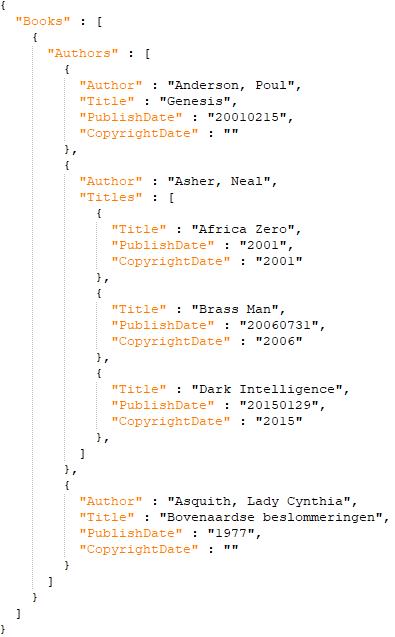

JSON Sort Order
Buttons
| Button |
Description |
 |
Clears all sort fields |
 |
Shows this help screen |
 |
Exits this screen |
| Apply |
Apply the changes made on this screen |
JSON Field Definition
JSON is an open standard file format and data interchange format that uses human-readable text to store and transmit data
objects consisting of attribute–value pairs and arrays (or other serializable values). It is a common data format with
diverse uses in electronic data interchange, including that of web applications with servers.
Objects
In this screen you can define up to 4 fields to be used as sorted object. Each field you choose here, acts as an container
for the objects to follow.
Example
Imagine that you are exporting a Books database, a logical element sort order would then be:
Object 1: Author
Object 2: Title
The result would then be something like this:
